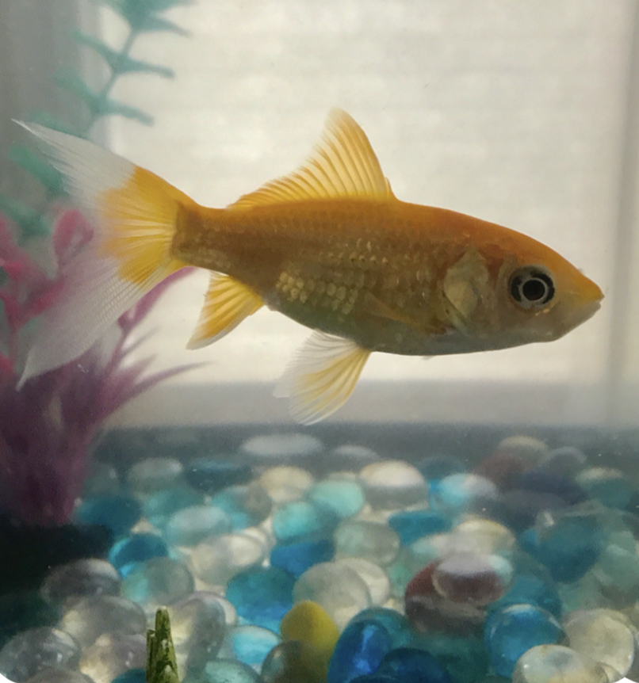

Meet the Staff
Staff
Hello! My name is Michele Kohl. I am the director of the SACC program at Fox Elementary School. I am certified to teach Early Childhood, Early Childhood Special Education, and Elementary Education.I have a true passion for working with our youngest learners! Helping each child progress in all areas of their development—academic, social, language, and motor—is a challenge that I am honored to accept daily. I strive to create a community of learners that nurtures this growth in a positive, fun environment.
Hi there! My name is Amy Johnston. I am currently a student at Oakland University pursuing an Early Education degree. I hope to one day become a teacher! In my freetime, I like biking, reading, cooking, and spending time with my family.
My name's Jerry, and I'm the classroom pet! I'm a 5 year old goldfish that loves to eat and swim.